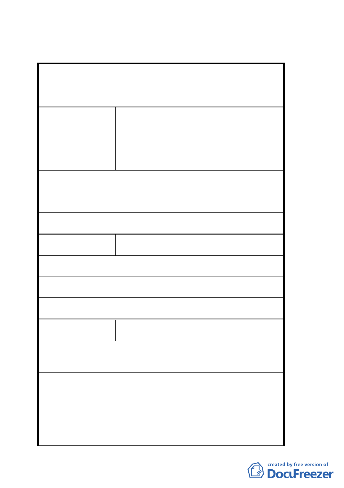

臺北市都市計畫委員會公民或團體所提意見綜理表
配合臺北市捷運系統內湖線工程變更沿線第三種住宅
案
名
區、第三之二種住宅區、科技工業區、公園用地為交
通用地及修訂西湖市場用地、交通用地（交十一）土
地使用管制暨劃定都市更新地區計畫案
鄭盛鴻 先生（台北市內湖路二段 336
巷 2 號 1 樓）
編
號２
陳情人
鄭志村 先生（台北市內湖路二段 336
巷 2 號 1 樓）
鄭茂松 先生（台北市內湖路二段 336
巷 2 之 1 號 7 樓）
陳情理由
1. 都市更新預設內湖捷運第二出口，請徵收建築物。
建 議 辦 法 2. 可否交換捷運內湖站第一出口旁邊ㄧ樓的建築物
土地。
委員會決議
同意捷運局提案，徵收內湖區康寧段三小段一八○地
號土地，供設置內湖站第二出入口及其相關設施。
編
號４
陳情人
郭信論 先生（台北市內湖區成功路
四段 294 巷 25 弄 13 號）
陳情理由
因 169-175 號地主意見分歧，改建無期；又聯開獎勵
條件不佳，使地主權益受損甚大。
建議辦法
不願參與聯合開發；否則請將該地以現值加成立即徵
收，且補償費用亦須一併辦理。
委員會決議
同意捷運局提案，徵收內湖區康寧段三小段一八○地
號土地，供設置內湖站第二出入口及其相關設施。
編
號５
陳情人
郭添仁 先生（台北市內湖區成功路
四段 173 號四樓）
陳情位置：內湖區康寧段三小段 188-193 地號
陳 情 理 由 該地屬空地，處理上可避免毀屋、過程容易且更接近
路口，方便出入。
1. 該地因整合不易，地主自知空地已多年閒置，不能
蓋屋，如條件優厚買入，地主較易配合。
2. 利用既有巷道，配合將來跨越捷運方式，建造一座
建 議 辦 法 陸橋，同樣從原來的出入口即可，如此可省去拆屋
惹民怨，又較節省經費、節省溝通程序、縮短工時，
應是最有效方法。
3. 或橫越馬路直接設人行徒步區，而將麥當勞前的行
第 3 頁，共 9 頁